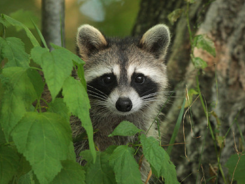
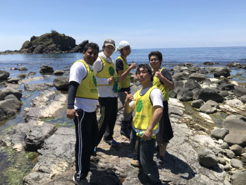
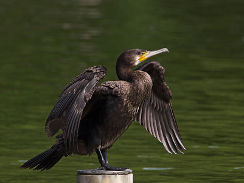

- 市民参加型アライグマ調査 -
特定外来生物・アライグマは生態系、特に両生・爬虫類に大きな影響を与えることが知られている。新潟県でも糸魚川・上越市での捕獲の記録が確認されており、分布の拡大が懸念されている。将来のアライグマ被害を無くすためにも、アライグマの分布を調査する必要があるといえる。
アライグマの分布調査には、アライグマが”ねぐら”として利用する神社仏閣に付く爪痕を探して調査する手法、「神社仏閣調査」が用いられる。この調査はスマートフォンがあれば誰でも簡単に調査に参加することができる。
そのため、是非とも多くの皆様と一緒に新潟県のアライグマの分布を調査していきたいと考える。

- 鳥獣対策 -
野生鳥獣による食害を防ぐためには、追い払いや防除器具の設置などに多くの労働力が必要だが、里山の過疎化、高齢化のため、労働力の確保が大変難しい。野生鳥獣による被害で収穫ができず、耕作を放棄する農家も増え、里山の過疎化に拍車をかけている。そこで、本研究室では、里山の労働力不足を工学技術で補うことで野生鳥獣と人間の共存するシステムを作り出すための技術開発を行っている。

- カワウ -
カワウは、古くから日本に生息していた魚食性の水鳥である。1970年代に農薬の生物濃縮による影響や河川干潟の改修などによる環境悪化によって全国で3000羽まで個体数が激減した。ところが、1990年以降、農薬の改善によって個体数が増え始め、全国の内水面漁業への被害や巣を作った樹木が枯死することによる植生被害などが問題となっている。本研究室では、カワウの個体群管理方法、内水面漁業の被害対策技術の確立、河川内でカワウの捕食を忌避できる漁礁の効果等の研究を行っている。
- 粟島浦村 -
新潟県には粟島浦村という周囲約20 kmの小さな島がある。この島には、オオミズナギドリの中規模繁殖地があり、海鳥の繁殖地として国の天然記念物に指定されている。一方で、外来種としてノネコ、ニホンジカが持ち込まれ、島の生態系に影響を与えている。オオミズナギドリは海洋生態系の高次捕食者であることから、日本海域の生態系をモニターするうえでの指標生物としても適している。本研究室では、オオミズナギドリの繁殖生態に関する長期モニタリング調査や島の生態系に影響を与える外来種の個体具管理に関する研究を行っている。
- 準備中 -
鋭意準備中
- 準備中 -
鋭意準備中
- 準備中 -
鋭意準備中
- 準備中 -
鋭意準備中
- 準備中 -
鋭意準備中